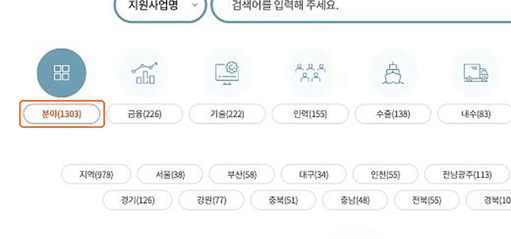
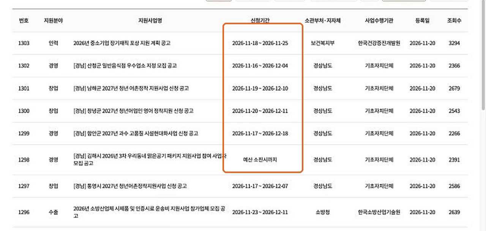
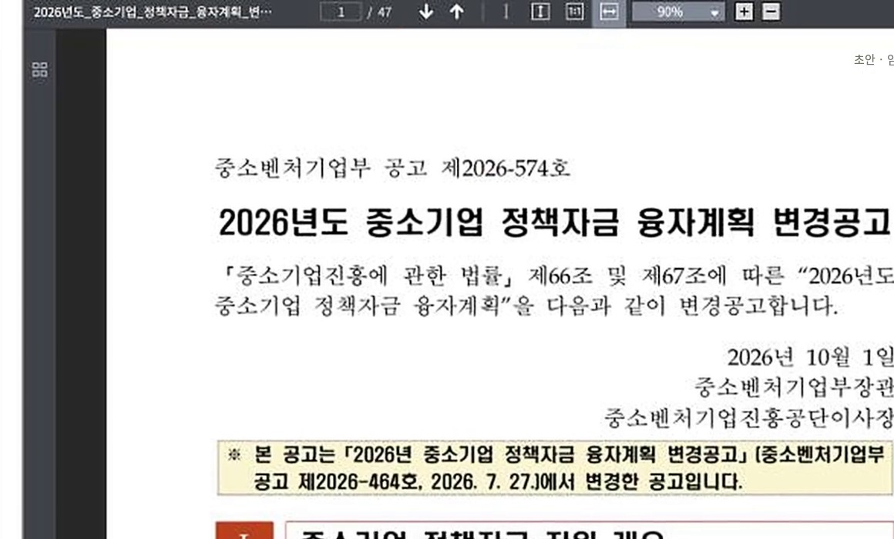
| 데이터로 확인한 사실 | 시사점 |
|---|---|
| 모태펀드 자펀드 1,480개 중 만기 전 761개를 운용사 279곳이 운용합니다. 기업당 투자 금액·투자 단계·연락처는 없습니다 | 운용사 이름만으로는 우리 회사에 맞는지 알 수 없습니다 |
| 이름·대표·시군구까지 같은 법인이 둘인 실제 사례가 있습니다. 재무는 옛 법인에만, 국민연금 가입자는 지금 법인에만 있었습니다 | 회사 이름만으로 모으면 다른 법인의 값이 섞입니다. 사람도 이름만으로는 구분할 수 없습니다 |
| 설립일이 자료마다 달랐습니다(금융위원회 값과 웹 조사 값) | 하나만 골라 보여 주면 틀릴 수 있으므로 두 값을 모두 보여 줘야 합니다 |
| 국민연금 가입자 수는 직원 수와 같지 않습니다 | 대신 참고하는 값과 원래 값을 구분해야 합니다 |
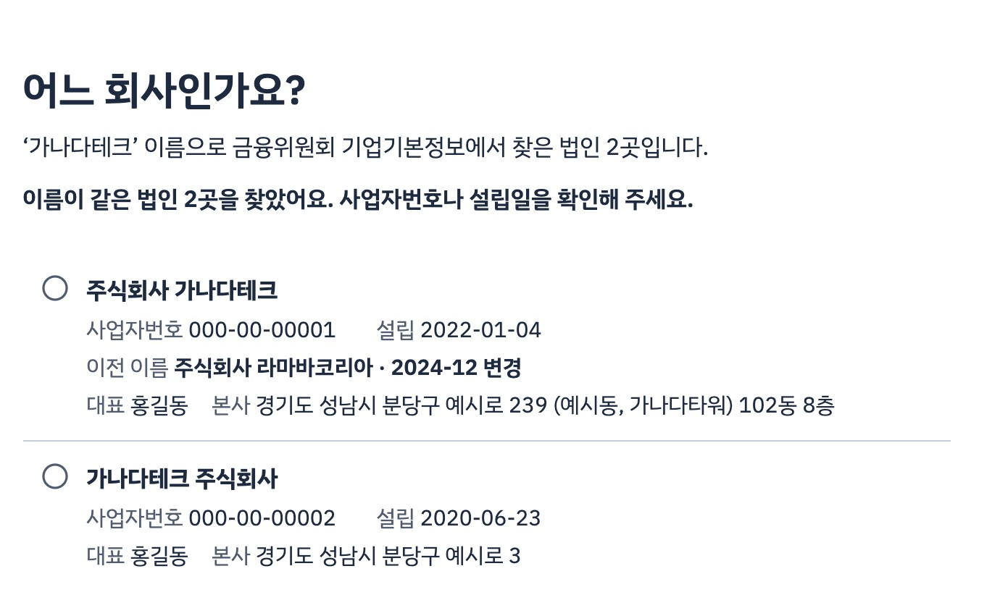
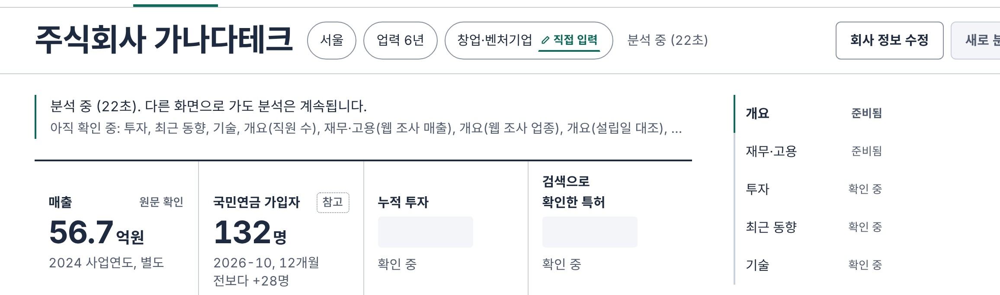
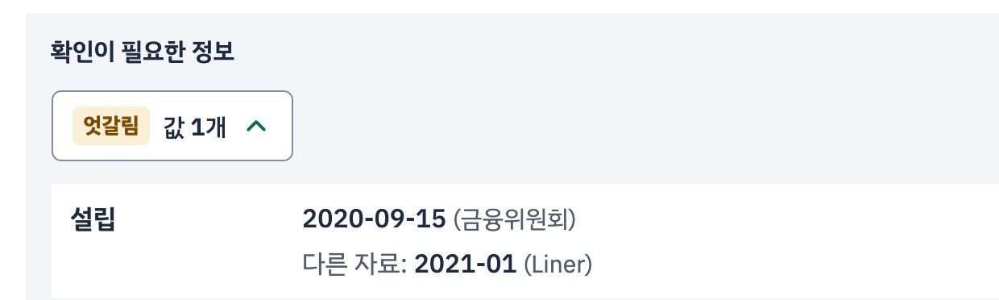
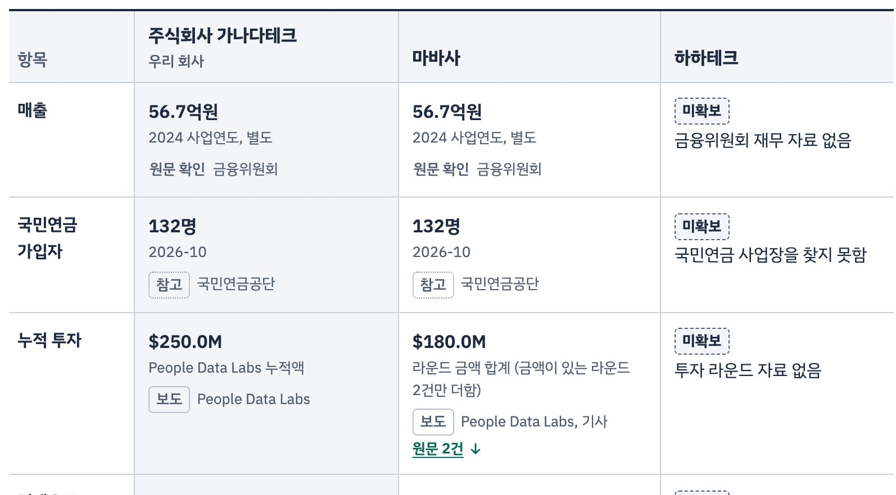
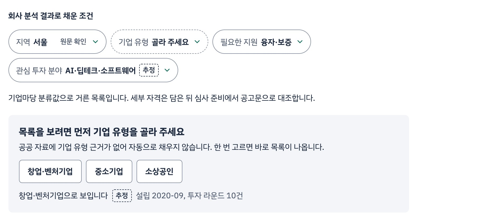
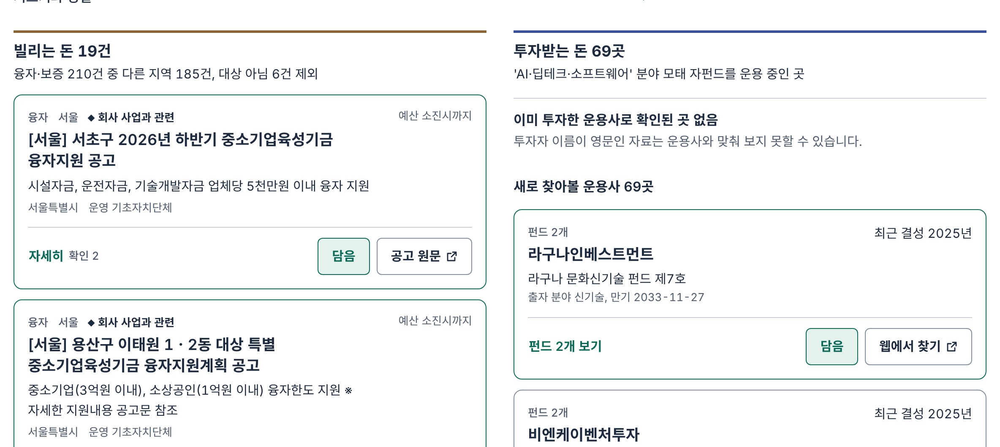
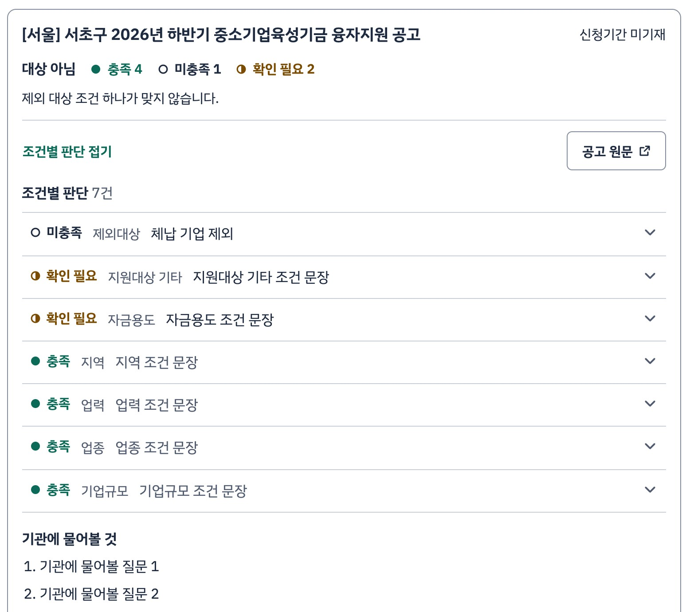
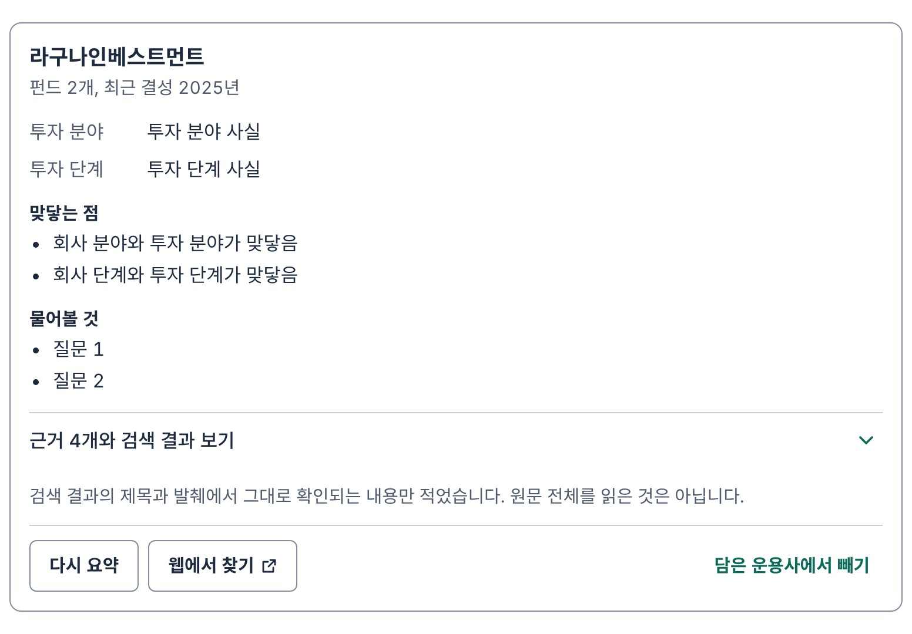
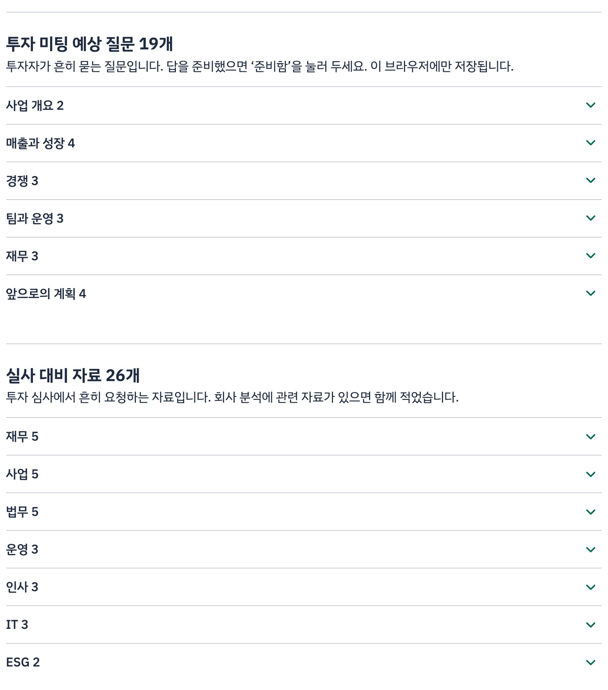
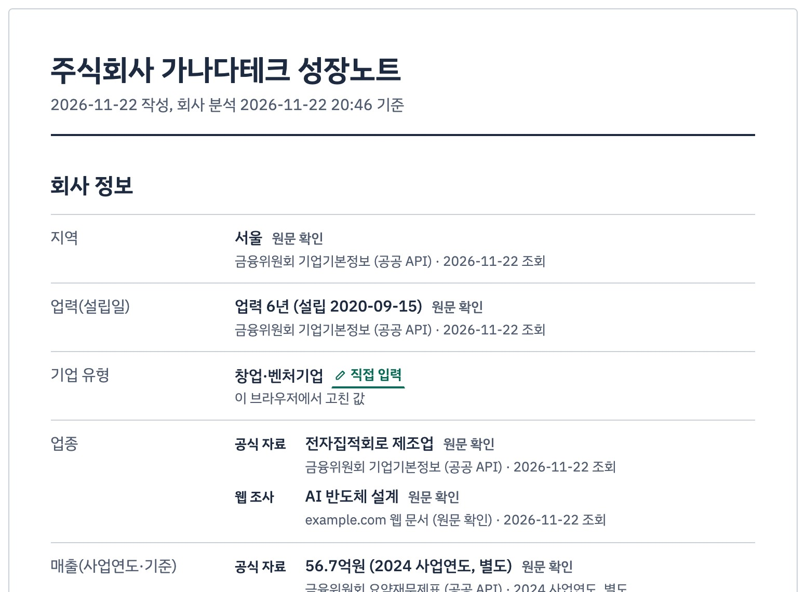
| 기능 | 호출 경로 | 사용처 | 기본 분석 |
|---|---|---|---|
| 웹 검색 | /api/v1/tools/search/web include_knowledge=false | 개요 자료 3, 원문 확인 사실 4, 뉴스 보완 2, 특허 후보 2(site:patents.google.com). 조건부·요청 시: 투자 이력 보완, 운용사 요약, 경쟁사 깊이 비교 | 11 |
| Premium 검색 | 같은 경로 include_knowledge=true | 투자 라운드·투자기관(People Data Labs 회사 카드). 요청 시: 경쟁사 깊이 비교 | 2 |
| 모델 · 게이트웨이 | /api/v1/chat/completions | openai/gpt-6.2-sol: 개요·경쟁사 후보·기술 낱말 정리, 중요 사건 요약, 투자 이력 보완, 경쟁사 요약, 운용사 요약, 논문 요약, 공고문 조건 추출 anthropic/claude-opus-5.5: 공고문과 회사 정보 대조 | 6 |
| 모델 · Responses | /api/v1/responses liner-gpt-router | 원문 확인 사실(facts): 기업분석 엔진의 분야별 사실 추출(4회) | |
| 학술 검색 | /api/v1/tools/search/scholar | 논문 동향(요청 시에만)의 추가 논문. OpenAlex와 함께 사용 | 0 |
| 기능 | Liner API · 요청 수 | 하는 일 | 실측 |
|---|---|---|---|
| 회사 개요 | 웹 검색 3 → gpt-6.2-sol 1 | 사업·제품·핵심 기술·경쟁사 후보·기술 낱말을 정리합니다. 기술 낱말은 판로(나라장터) 검색어로 이어집니다 | 약 10초 |
| 원문 확인 사실 | 웹 검색 4 → Responses(liner-gpt-router) 4 | 회사 정보·인력과 투자·기존 투자자·경쟁사 4개 주제로 검색하고 웹 원문을 최대 8쪽 읽어 매출·직원 수·기존 투자자 등을 추출합니다. 원문에서 값을 찾은 것만 "원문 확인"으로 표시합니다 | 약 176초 |
| 투자 이력 | Premium 2(+ 부족 시 웹 검색 1 → 모델 1) | People Data Labs 회사 카드로 라운드·누적 투자·투자기관을 받고, 비어 있는 라운드만 웹 검색으로 보완합니다 | 30초 이내 |
| 최근 동향 | 웹 검색 최대 2(국문·영문, 최근 1년) → 모델 1 | NAVER 뉴스에 없는 기사와 영문 보도를 보완하고, 묶어서 중요 사건을 요약합니다(사건마다 근거 기사) | 30초 이내 |
| 기술 · 특허 | 웹 검색 2(site:patents.google.com) | 특허 후보를 찾은 뒤 Google Patents 원문에서 출원인이 해당 회사인 특허만 셉니다(회사당 원문 30쪽) | 30초 이내 |
| 논문 동향(요청 시) | 학술 검색 기술 분야당 1(최대 6, 재시도 포함 최대 12) → 모델 1 | OpenAlex와 함께 연도별 발표량·주요 기관·주요 논문을 정리합니다 | 26.5초 |
| 경쟁사 깊이 비교(요청 시) | 경쟁사 1곳당 웹 검색 2~3 · Premium 1~2, 비교 전체에 모델 1~2(상한: 5곳 34, 재시도 제외) | 경쟁사마다 특허·투자를 Liner로 찾아(최근 기사는 NAVER) 우리 회사와 같은 항목으로 비교하고, 경쟁사별 사업·최근 변화를 요약합니다 | 2곳 31.6초, 11회 |
| 공고문 자격 대조(요청 시) | gpt-6.2-sol 1(조건 추출) → claude-opus-5.5 1(대조) | 공고문에서 자격 조건을 추출하고 회사 정보와 조건별로 대조합니다. 추출 결과는 공고마다 저장해 모든 회사가 재사용합니다 | 26~30초 |
| 운용사 요약(요청 시) | 웹 검색 1 → 모델 1 | 담은 운용사의 투자 분야·단계·사례·펀드 결성·제안 경로를 검색 결과에 적힌 사실로만 정리합니다 | 5~7초 |
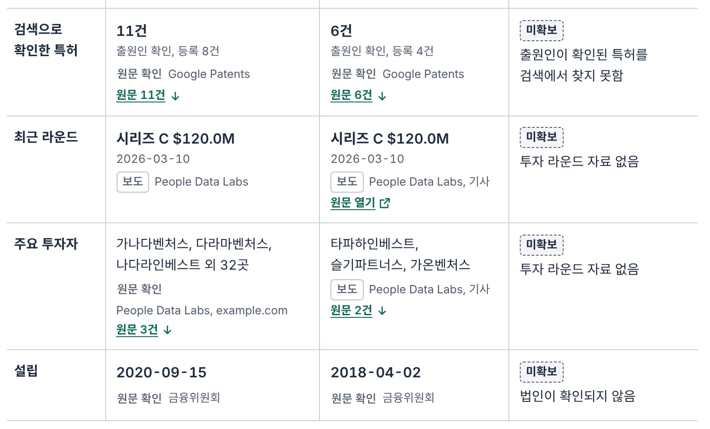
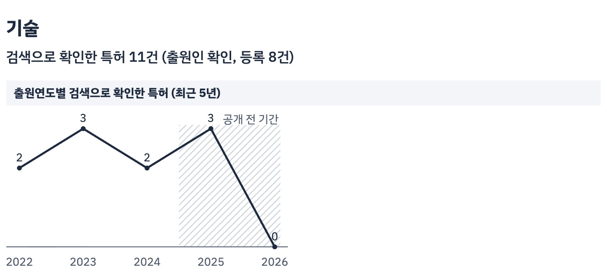
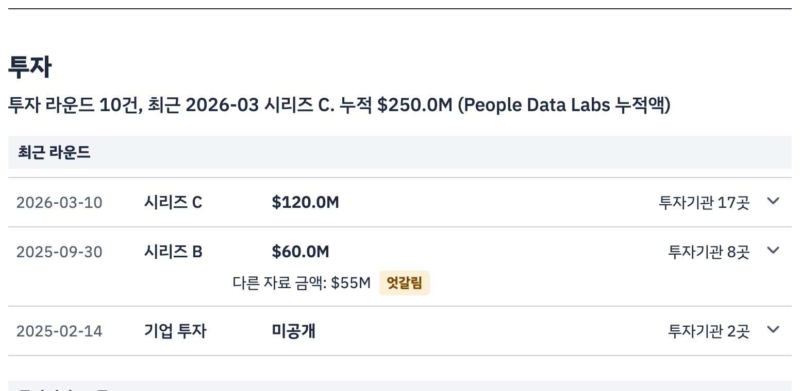
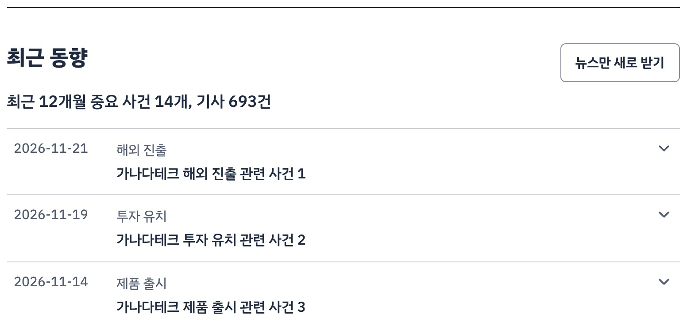
| 모델 | 근거 확인 | 응답 시간 | 비용(짧은 공고 / 47쪽) | 관찰 결과 |
|---|---|---|---|---|
| gpt-6.2-sol | 48/48 | 7~16초 | $0.02 / $0.09 | 세부 자금별 업력까지 추출. 추출에 채택 |
| liner-mark | 48/48 | 16~19초 | ≈$0.01 / $0.04 | 예외 조항까지 포함. 품질은 위와 비슷 |
| claude-opus-5.5 | 47/48 | 20~22초 | $0.06 / $0.21 | 자격 조건 중심. 대조에 채택 |
| claude-haiku-5.5 | 53/53 | 7~9초 | $0.002 / $0.005 | 47쪽 공고에서 업력·업종 누락 |
| 대조 대상 | 대조 기준 자료 | 통과 기준 | 코드 |
|---|---|---|---|
| 공고문 조건의 근거 문장 | 공고문 원문 | 공백을 정리한 뒤 원문에 글자 그대로 있고 6자 이상이어야 합니다. 통과하지 못하면 화면에 내보내지 않습니다 | funding/notice.py |
| 운용사 사실 | 검색 결과 | 근거 문장이 해당 검색 결과에 있을 때만 사실로 남깁니다 | funding/gp.py |
| 원문 확인 사실 | 웹 원문 | 값을 원문에서 찾은 경우에만 "원문 확인"으로 표시합니다. 찾지 못한 값은 보도·추정으로 낮춰 둡니다 | categories.py |
| 투자 이력(웹 보완) | 검색 결과 발췌 | 근거 문장이 발췌에 있어야 합니다. 투자사·금액·라운드는 발췌의 표기를 그대로 씁니다 | growth/funding_history.py |
| 특허 | Google Patents 원문 | 원문의 출원인이 해당 회사여야 합니다 | growth/patents.py |
| 요청 시에만 보내는 호출 | Liner 요청 | 실측 |
|---|---|---|
| 공고문 자격 대조 | 모델 2(추출 1 · 대조 1). 추출은 공고마다 한 번 실행 후 저장 | 26~30초, 2건 약 $0.13 |
| 운용사 요약 | 검색 1 · 모델 1 | 5~7초 |
| 경쟁사 깊이 비교 | 상한 고정 4 + 한 곳당 6(5곳 34) | 2곳 31.6초, 11회 |
| 논문 동향 | 학술 검색 최대 6(재시도 포함 12) · 모델 1 | 26.5초, 학술 6 · 모델 1 |
| 뉴스만 새로 받기 | 검색 2 · 모델 1 | 20.8초 |
| 단계 | 내용 |
|---|---|
| 기업분석 엔진(2026-11-20) | 회사명으로 기업 정보를 수집·검증하는 프로토타입(엔진 pipeline.py 등). 원문 확인 사실(facts)이 이 엔진을 사용하며, 엔진의 동작은 바꾸지 않았습니다 |
| 엔진 파일에 뒤에 추가 | liner_client.py 게이트웨이 JSON 호출·학술 검색, config.py 상수, fetcher.py 내부망 차단, 의존성 3개 |
| 펀딩노트(2026-11-21) | 자금 찾기 화면, 공고문 자격 대조, 회사 조회, 운용사 요약(funding/, api/, web/, 공공 데이터 수집) |
| 팀원의 통합 분석 프로토타입(2026-11-22) | 팀원이 만든 수집·분석 모듈(재무·고용, 뉴스, 특허, 논문, 투자 이력, 나라장터). 성장노트 서버로 옮겨 수정한 뒤 원본 화면은 제출 저장소에서 삭제했습니다 |
| 성장노트 통합(2026-11-22~24) | growth/(단락 작업, 합친 값, 스냅샷, 호출 상한), api/analysis.py, 새 화면, 테스트, 설계 문서 |